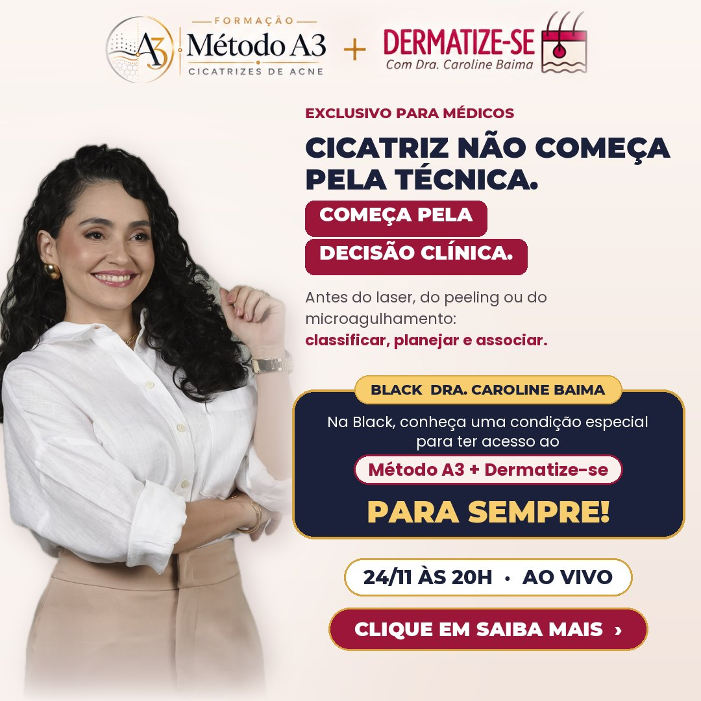
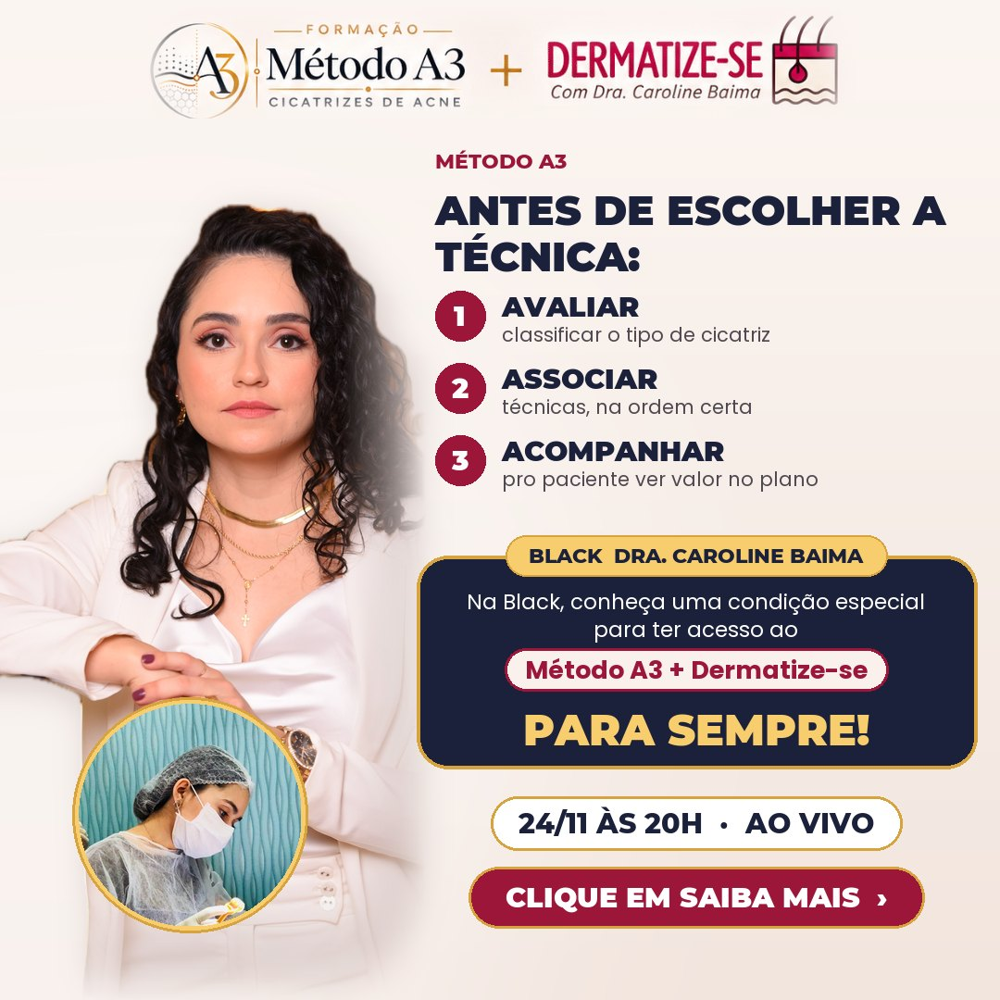
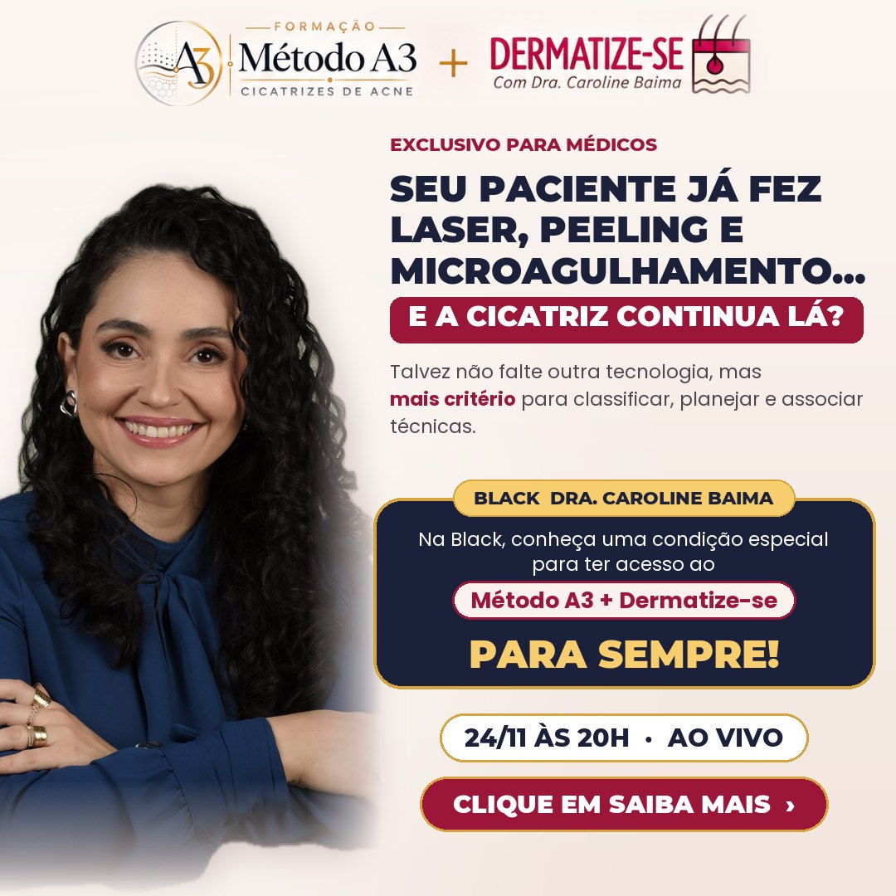
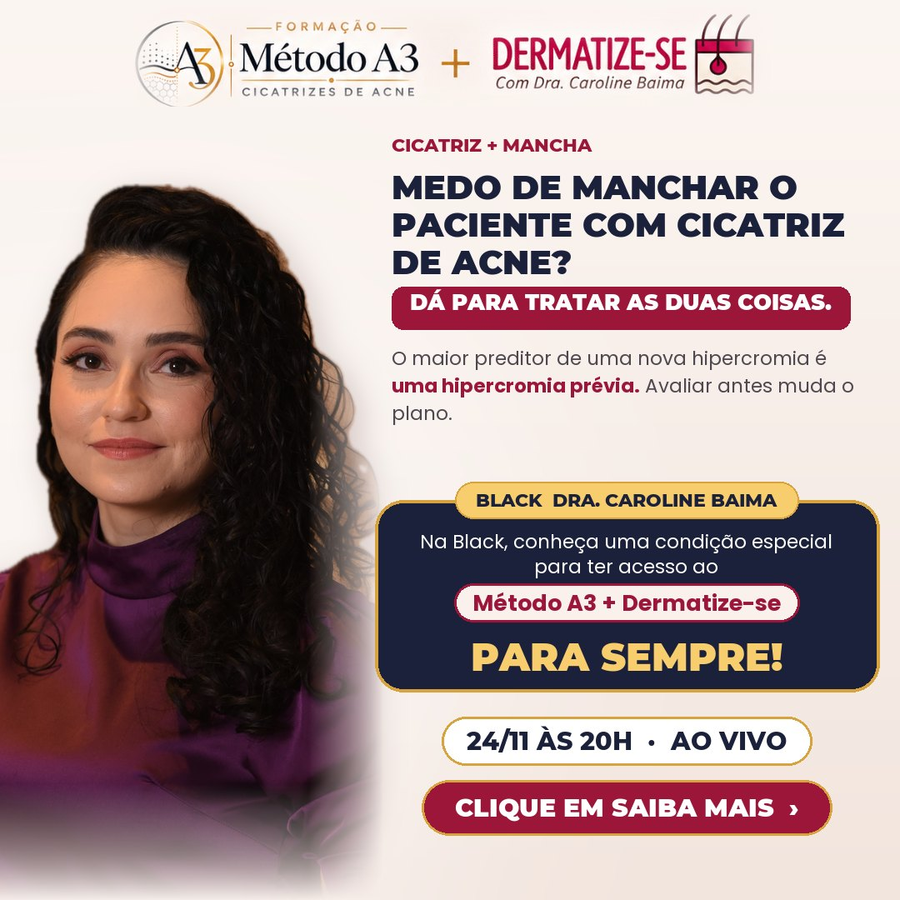

Dra. Caroline Baima · Black Dermatize-se + Método A3 · 16/11/2026
10 artes novas da Black para aprovação
Olhamos o que mais trouxe inscritos para o grupo VIP desde 13/11 e desenhamos 10 artes novas a partir disso. Elas repetem a fórmula das duas peças que lideram a captação e testam frases novas da própria Dra. Caroline.
53inscritos vindos de anúncio até 16/11 8h
37 de 53vieram do vídeo 038 e da arte 001
10artes novas para aprovar
O que mais está trazendo inscritos
- A dor clínica do médico. O vídeo 038 ("o maior desafio não é o procedimento, é a associação e a ordem") e a arte 001 ("várias sessões e o resultado não foi o esperado?") são as duas peças que mais trouxeram inscritos. As duas falam do raciocínio clínico na cicatriz de acne.
- Arte de fundo claro. Com o mesmo título, a versão clara da arte trouxe mais inscritos que a versão escura. Por isso as 10 peças novas seguem o visual claro da 001.
- O cartão da oferta. "Método A3 + Dermatize-se PARA SEMPRE" mostra o que a pessoa ganha ao entrar no grupo. Ele fica em todas.
- A Dra. em foto de estúdio, com rosto inteiro e uma ideia por peça. Usamos só fotos do ensaio, sem foto de paciente.
As 10 peças
Todas em 1080×1080. Cada uma traz o título que muda e a primeira linha do texto do anúncio. O resto do texto é o mesmo de hoje (mais abaixo).
019 · variação do vídeo 038O maior desafio na cicatriz de acne não é o procedimento
O maior desafio na cicatriz de acne não é o procedimento. É escolher a associação e a ordem certa para cada paciente.
Fonte: fala da Dra. no vídeo 038, o campeão.

020 · decisão clínicaCicatriz não começa pela técnica
Cicatriz não começa pela técnica. Começa pela decisão clínica.
Fonte: imersão, manhã, linha 61.
021 · variação do vídeo 039O erro comum que frustra o paciente
Existe um erro comum que faz o paciente sair frustrado mesmo depois de várias sessões. E ele acontece antes da escolha da técnica.
Fonte: fala da Dra. no vídeo 039.
022 · mito do laserNão existe um melhor laser
Não existe um melhor laser. Não tem bala de prata. A tecnologia mais revolucionária é o seu raciocínio.
Fonte: imersão, manhã, linha 67, e tarde, parte 10.
023 · paciente no centroVocê trata o paciente, e não a cicatriz
Você trata o paciente, e não a cicatriz.
Fonte: imersão, manhã, linha 629.

024 · lista, os 3 pilaresAntes de escolher a técnica: avaliar, associar, acompanhar
Antes de escolher a técnica: avaliar, associar e acompanhar. São os 3 pilares do Método A3.
Fonte: os 3 pilares do Método A3 (base de criativos, seção 3).
025 · autoridade pela vivênciaEu tenho cicatriz de acne
Eu tenho cicatriz de acne. E convivo até hoje com a acne da mulher adulta.
Fonte: imersão, manhã, linha 43. Como é uma história pessoal da Dra., precisa do OK dela.

026 · variação da 001Já fez laser, peeling e microagulhamento
Seu paciente já fez laser, peeling e microagulhamento… e a cicatriz continua lá?
Fonte: texto da arte 001, já aprovado pelo time.

027 · medo de mancharMedo de manchar o paciente?
Medo de manchar o paciente com cicatriz de acne? Dá para tratar as duas coisas.
Fonte: imersão, manhã, linhas 395 e 425.
028 · pare de encaminharVocê atende acne todo santo dia
Você atende acne todo santo dia. E quando vira cicatriz, encaminha?
Fonte: imersão, manhã, linhas 117 e 305 (tarde, parte 19).
Texto do anúncio (igual em todas, depois da primeira linha)
[primeira linha da peça]
No dia 24 de novembro, às 20h, ao vivo no YouTube, a Dra. Caroline Baima revela uma condição especial para os dois treinamentos online dela: Dermatize-se e Formação Método A3, com acesso vitalício.
Quem está no grupo VIP recebe o acesso a essa oferta.
👉 Toque em CADASTRE-SE, deixe seu e-mail e WhatsApp e entre no grupo VIP.
Próximo passo
Respondam com os números das peças aprovadas (por exemplo: 019, 020, 026) e ajustes, se houver. As aprovadas entram no ar ao lado do vídeo 038 e da arte 001, que continuam rodando.